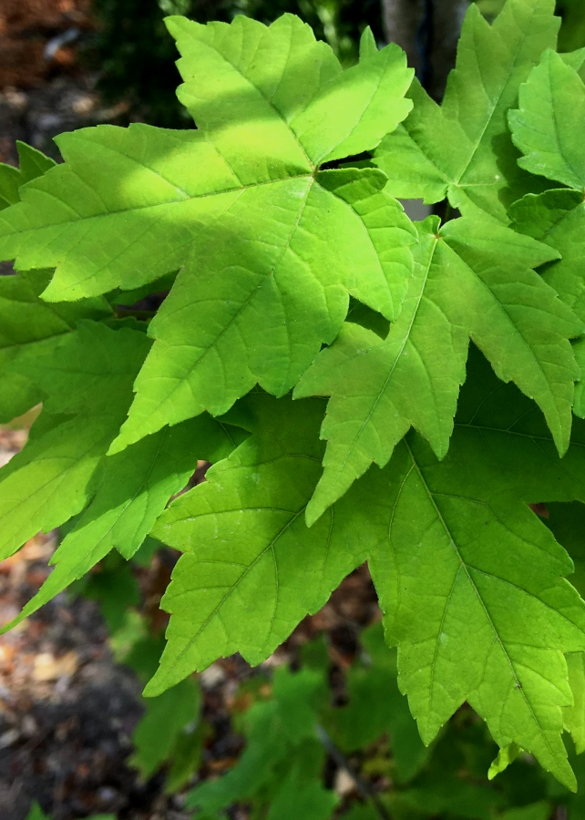
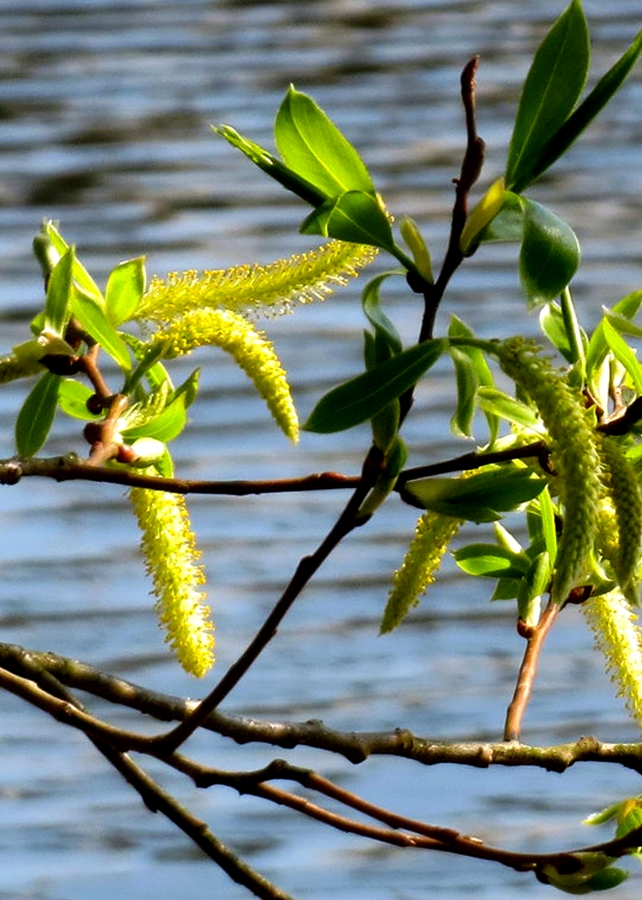

MemorTree Match
Let's Begin
TREEformation:
American Beech
Black Cherry
Black Oak
Eastern Hemlock
Eastern White Pine
Paper Birch
Red Maple
Red Oak
White Cedar
White Oak
White Willow
Yellow Birch
American Beech Bark
Photo by
JOE BLOWE
American Beech Leaves
Photo by
Katja Schulz
Black Cherry Bark
Photo by
Eli Sagor
Black Cherry Leaves
Photo by
Suzanne Cadwell
Black Oak Bark
Photo by
Bruce Kirchoff
Black Oak Leaf
Photo by
Bruce Kirchoff
Eastern Hemlock Bark
Photo by
Lal Beral
Eastern Hemlock Leaves
Photo by
Scott Zona
Eastern White Pine Bark
Photo by
Nicholas A. Tonelli
Eastern White Pine Leaves
Photo by
F. D. Richards
Paper Birch Bark
Photo by
Kent McFarland
Paper Birch Leaves
Photo by
Eli Sagor
Red Maple Bark
Photo by
Bri Weldon

Red Maple Leaves
Photo by
Scott Zona
Red Oak Bark
Photo by
Andreas Rockstein
Red Oak Leaves
Photo by
Per Verdonk
White Cedar Bark
Photo by
Steven Severinghaus
White Cedar Leaves
Photo by
F. D. Richards
White Oak Bark
Photo by
Katja Schulz
White Oak Leaves
Photo by
J. Maughn
White Willow Bark
Photo by
Hornbeam Arts

White Willow Leaves
Photo by
Andreas Rockstein
Yellow Birch Bark
Photo by
Nicholas A. Tonelli
Yellow Birch Leaves
Photo by
Eli Sagor